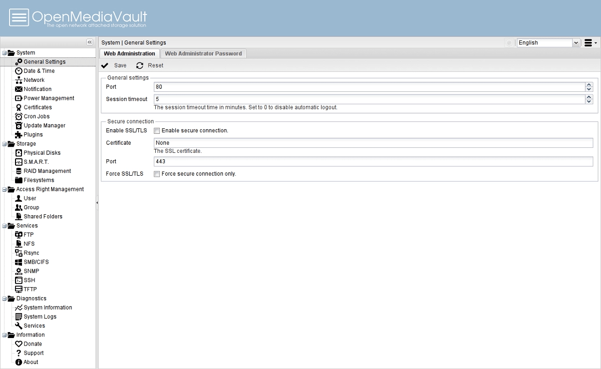

OpenMediaVault

Sobre OpenMediaVault
OpenMediaVault considera el desarrollo de soporte para dispositivos integrados y la creación de un sistema flexible para instalar complementos como prioridades de desarrollo, mientras que la dirección clave del desarrollo de FreeNAS es utilizar las capacidades del sistema de archivos ZFS.
En comparación con FreeNAS, el mecanismo para instalar complementos ha sido rediseñado, en lugar de cambiar todo el firmware, OpenMediaVault utiliza medios estándar para actualizar paquetes individuales y un instalador completo para seleccionar los componentes necesarios durante el proceso de instalación.
Entre los servicios asociados con la organización del trabajo del repositorio de servicios básicos: SSH/SFTP, FTP, SMB/CIFS, cliente DAAP, RSync, cliente BitTorrent, NFS y TFTP.
Ademas, puede usar EXT3, EXT4, XFS y JFS como sistema de archivos. Dado que OpenMediaVault originalmente tenía como objetivo expandir la funcionalidad mediante la conexión de complementos, se desarrollan por separado con soporte para AFP (Apple Filing Protocol), servidor BitTorrent, servidor iTunes/DAAP, LDAP, iSCSI target, UPS, LVM y antivirus (ClamAV) y tambien se admite la creación de RAID de software (JBOD / 0/1/5/6) usando mdadm.
Novedades OpenMediaVault 5
Cambios que se destacan de esta nueva versión:
- Se agregó soporte para particiones SMB / CIFS al motor de respaldo Time Machine.
- Para procesar el botón de apagado, se utiliza systemd-logind.
- Systemd se usa para iniciar un reinicio, apagado e hibernación.
- En lugar de ntpd, se usó chrony para sincronizar la hora exacta.
- Se proporciona el almacenamiento del tamaño y la posición de las ventanas.
- En la pantalla principal, se implementa una información sobre herramientas para la actualización.
- Se agregó salida de advertencia de reinicio.
- Debido a problemas de estabilidad para nuevas instalaciones, el soporte para directorios compartidos («/ sharedfolder /») está deshabilitado de manera predeterminada.
Descarga
Recomiendo acceder a la web oficial de
Web oficial de OpenMediaVault 5
donde encontraréis todos los detalles, podéis
descargar OMV 5 desde aquí
.
Sobre OpenMediaVault
OpenMediaVault considera el desarrollo de soporte para dispositivos integrados y la creación de un sistema flexible para instalar complementos como prioridades de desarrollo, mientras que la dirección clave del desarrollo de FreeNAS es utilizar las capacidades del sistema de archivos ZFS.
En comparación con FreeNAS, el mecanismo para instalar complementos ha sido rediseñado, en lugar de cambiar todo el firmware, OpenMediaVault utiliza medios estándar para actualizar paquetes individuales y un instalador completo para seleccionar los componentes necesarios durante el proceso de instalación.
Entre los servicios asociados con la organización del trabajo del repositorio de servicios básicos: SSH/SFTP, FTP, SMB/CIFS, cliente DAAP, RSync, cliente BitTorrent, NFS y TFTP.
Ademas, puede usar EXT3, EXT4, XFS y JFS como sistema de archivos. Dado que OpenMediaVault originalmente tenía como objetivo expandir la funcionalidad mediante la conexión de complementos, se desarrollan por separado con soporte para AFP (Apple Filing Protocol), servidor BitTorrent, servidor iTunes/DAAP, LDAP, iSCSI target, UPS, LVM y antivirus (ClamAV) y tambien se admite la creación de RAID de software (JBOD / 0/1/5/6) usando mdadm.
Novedades OpenMediaVault 5
Cambios que se destacan de esta nueva versión:
- Se agregó soporte para particiones SMB / CIFS al motor de respaldo Time Machine.
- Para procesar el botón de apagado, se utiliza systemd-logind.
- Systemd se usa para iniciar un reinicio, apagado e hibernación.
- En lugar de ntpd, se usó chrony para sincronizar la hora exacta.
- Se proporciona el almacenamiento del tamaño y la posición de las ventanas.
- En la pantalla principal, se implementa una información sobre herramientas para la actualización.
- Se agregó salida de advertencia de reinicio.
- Debido a problemas de estabilidad para nuevas instalaciones, el soporte para directorios compartidos («/ sharedfolder /») está deshabilitado de manera predeterminada.
Descarga
Recomiendo acceder a la web oficial de Web oficial de OpenMediaVault 5 donde encontraréis todos los detalles, podéis descargar OMV 5 desde aquí .